Enterprise Objects Framework Release 1.1 Copyright ©1995 by NeXT Computer, Inc. All Rights Reserved.
| 6 |
Creating an Enterprise Objects Framework Project
| Organizing an Enterprise Objects Framework application, as with all applications in NEXTSTEP, starts in Project Builder.
Setting up your project entails: |
| Including the Enterprise Objects Framework libraries. | ||
| Including the Foundation library. | ||
| Forcing the loading of unreferenced symbols. | ||
| Setting your application class to be EOApplication. |
| After you use Project Builder to prepare your project for the needs of an Enterprise Objects Framework application, you design the application's user interface with Interface Builder and write its code.
This chapter describes the things you do in Project Builder and Interface Builder to create an Enterprise Objects Framework application. The majority of the material presented here describes how to use Interface Builder to manipulate the objects in the EOPalette. The fundamentals of Project Builder and Interface Builder are presented in NEXTSTEP Development Tools and Techniques; it's assumed that you have some familiarity with these applications. For more information about the version of Interface Builder used with Enterprise Objects Framework, see Working With Interface Builder. The interface layer of the Enterprise Objects Framework allows you to create user interfaces for any enterprise object class. The examples in this chapter are based on creating user interfaces for enterprise object classes specified in EOModeler. Using EOModeler and Interface Builder together automates the development process significantly, because you can rely on the default behaviors of the Framework. You can drag a model file or entity into Interface Builder to create a controller that includes an EODatabaseDataSource, and use the class properties you specified in EOModeler as the class keys ("keys" in this context refers to the key-value coding protocol used to access the data of an enterprise object). For more information on creating a model, see Chapter 5, "Using EOModeler." |
| Creating a Project |
| To create your project, launch Project Builder and choose New from the Project menu. In the New Project panel, give your project the name you want to use for your application and click OK. The new project is displayed.
Adding the Enterprise Objects Framework Libraries The Enterprise Objects Framework libraries contain the code you need to make your application work. You also need to include the Foundation library. To include the libraries in your project, double-click the Libraries suitcase in Project Builder's File Viewer, and select the files libEOAccess_s.a, libEOInterface_s.a, and libFoundation_s.a in the Add Libraries panel. In the File Viewer's list of libraries, the libraries appear as EOAccess_s, EOInterface_s, and Foundation_s. |
| 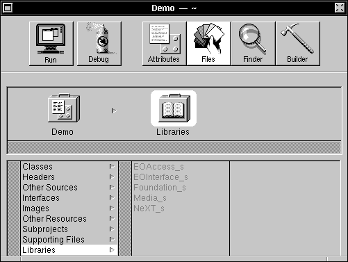 |
| Figure 35. Adding Libraries to Your Project
Loading Unreferenced Symbols The Enterprise Objects Framework dynamically loads the adaptor or adaptors your application needs. The adaptor code may refer to symbols from the Enterprise Objects Framework library, but since not all of these references are resolved when your application is being compiled, they won't necessarily be loaded into your application's executable image. To rectify this, you need to force the loader to load all the symbols that the adaptor might refer to; this is done by editing your project's Makefile.preamble file (located in Supporting Files in your project) to include this line: |
 OTHER_LDFLAGS = -all_load
OTHER_LDFLAGS = -all_load
| This tells the loader to load all the symbols from the named libraries--even if they aren't referred to when the application is being compiled. When, in the course of your application's execution, an adaptor is dynamically loaded and used, the symbols that it needs are thus guaranteed to be present.
To keep these symbols from being stripped when you build your application with the "install" target (that is, when you "make install" your application), edit your Makefile.postamble file (also located in Supporting Files) to include this line: |
 APP_STRIP_OPTS = $(DYLD_APP_STRIP_OPTS)
APP_STRIP_OPTS = $(DYLD_APP_STRIP_OPTS)
| Setting Your Application Class
To allow your application to take advantage of the Foundation Kit's autorelease behavior, you need to set your project's application class to be EOApplication. To set the application class: |
| 1. | In your project window, click the Attributes button to change to the Attributes display. | |
| 2. | Edit the App. Class text field to contain the text "EOApplication". |
| For more information on the Foundation Kit, see the Foundation Kit Reference. |
| Creating the Interface |
| To begin creating a user interface for your application, launch Interface Builder. The interface objects that are provided by the Enterprise Objects Framework for use in Interface Builder are manipulated in the same manner as standard Application Kit objects such as Buttons and Sliders: You drag an object into a window and drop it on or connect it to some other object.
Loading EOPalette The palette provided for use in the Enterprise Objects Framework is the EOPalette. To load the EOPalette, choose Open from the Interface Builder Palettes submenu of the Tools menu. The Open Palette panel appears. |
| 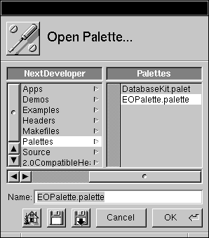 |
| Figure 36. The Open Palette Panel
In the Open Palette panel, select EOPalette.palette in /NextDeveloper/Palettes and click OK. The EOPalette includes three objects: EOController, NXTableView and NXImageView. |
| 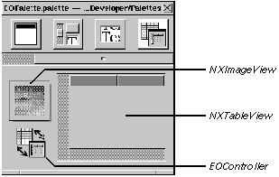 |
| Figure 37. The EOPalette
An NXImageView object displays images (one image at a time). An NXTableView object displays two-dimensional tables of data. An EOController object maintains associations between values in enterprise objects and user interface controls. In addition, it provides an undo facility, optionally buffers editing and operations, and interacts with a data source.
Controllers, Associations, and Class Keys Controllers synchronize the data displayed in the user interface with the corresponding data in an enterprise object. An EOController: |
| Tracks the selection as the user changes it. | ||
| Applies updates from user interface objects to enterprise objects. | ||
| Applies changes in enterprise objects back to user interface objects. |
| Controllers use EOAssociations to mediate between enterprise objects and the user interface. An association ties a single user interface object to a value corresponding to a key (named property) in an enterprise object or objects managed by the controller. Controllers maintain an array of associations and an array of their enterprise objects. Associations retain their class key, their destination, and a reference to their controller.
The term class keys in this context refers to the EOKeyValueCoding informal protocol, in which the properties in an enterprise object are accessed as key-value pairs. An enterprise object class can carry its properties either as instance variables or as an NSDictionary object. In a specific instance of an enterprise object, each key has a corresponding value. For example, an instance of the Employee class has the key lastName, which might have the value "Smith." An association can access the value "Smith" through the key lastName. So, for example, if you change the value "Smith" to "Jones" in a TextField for the key lastName, the association communicates the change back to the enterprise object through the controller. For more information about the relationship between enterprise objects and the interface layer, see Chapter 3, "From Objects to the User Interface." For more information about key-value coding, see the EOKeyValueCoding protocol specification in the Enterprise Objects Framework Reference. |
| Creating a New Application |
| The following sections describe how to use the EOPalette objects, as well as the standard control objects, to create a user interface for an application.
When you open a nib file from your project to start designing your user interface, Interface Builder displays the nib file window. |
| 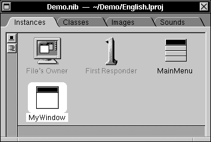 |
| Figure 38. The Interface Builder nib File Window |
| Adding an NXTableView |
| You can use an NXTableView object to display rows of data in your user interface. A new NXTableView that you drag into a window has two columns with enough room for about six records. You can add columns by cutting and pasting an existing column, or by connecting directly to the NXTableView (see "Forming Associations Between an Entity Controller and an NXTableView" for information on how to do this). Figure 39 shows an NXTableView to which a third column has been added. |
| 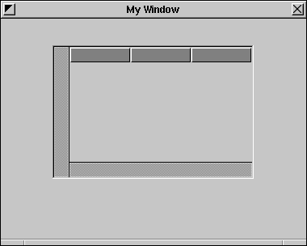 |
| Figure 39. An NXTableView in a Window |
| Adding EOController and EODatabaseDataSource Objects |
| To display data in your user interface, you need an EOController object. Controllers manage associations between the values of class keys and objects (typically, user interface objects). You also need an EODatabaseDataSource, which acts on behalf of the controller to fetch enterprise objects from and save them to the database. In combination, EOController and EODatabaseDataSource coordinate the flow of data between the user interface and the database.
You use either of two approaches to produce an entity controller, which consists of an EOController pre-connected to an EODatabaseDataSource: |
| Dragging a model file from Workspace Manager into the nib file window, or | ||
| Dragging an entity from EOModeler into the nib file window. |
| Both of these approaches give you access to all of the entities defined in your model; the entity controllers they create are identical.
The EOPalette provides a plain EOController object that can be used to create a detail controller; it can also be used if you want to programmatically set a data source. For more information on using detail controllers, see "Creating a Master-Detail Interface."
Dragging a Model File into the nib File Window You use EOModeler to display the entities available for a particular database, and to define the mapping between an entity and an enterprise object class. Once you've defined a model, you can use it to create an entity controller in Interface Builder by dragging in either the model file itself or a single entity. For more information on using EOModeler to create model files, see Chapter 3, "Using EOModeler." To create an entity controller from a model file: |
| 1. | Drag a model file from Workspace Manager into the Interface Builder nib file window. | |
| Interface Builder displays a panel, asking if you want to add the model file to your project. Adding a model file to your project places it in the project's Other Resources suitcase. Click Yes to add the model file to your project. If you don't place the model file in your project it stays in its current location. At run time Enterprise Objects Framework looks for the model first in your application's main bundle, then in ~/Library/Models, then in /LocalLibrary/Models, and finally in /NextLibrary/Models. | ||
| Once you've specified the destination of your model file, Interface Builder displays the Set Entity panel, prompting you to select the entity for which you want to create an entity controller. |
| 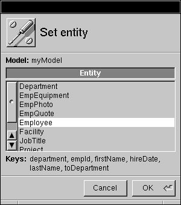 |
| Figure 40. The Set Entity Panel |
| 2. | In the Set Entity panel, select the entity you want to use and click OK. | |
| Note that this should be an entity for which you've specified a primary key in EOModeler; this is essential for your application to work properly. |
| Figure 41 shows the nib file window after the model file has been dragged into it. The resulting entity controller that's created has the same name as the entity you selected in the Set Entity panel. |
| 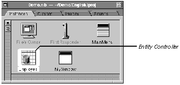 |
| Figure 41. An Entity Controller
Double-clicking an entity controller in the nib file window launches EOModeler, where you can edit the model that includes the entity. Any edits you make and save to a model file after you drag it into Interface Builder are reflected in the entity controller created from the model. By clicking the Outline mode button in the nib file window and clicking the button to the left of EOController, you can see that the entity controller actually includes both an EOController and an EODatabaseDataSource object, as shown in Figure 42. Clicking the button expands and contracts the outline. |
| 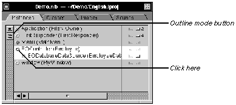 |
| Figure 42. Examining an Entity Controller in Outline Mode
Inspecting an Entity Controller An entity controller has access to the keys of its associated enterprise object class. These keys correspond to the properties you supplied for the class in EOModeler. For more information on class keys, see "Controllers, Associations, and Class Keys." The EOController Inspector lets you examine class keys and set options used by the entity controller. To display the EOController Inspector, select the entity controller in the nib file window and choose Inspector from the Tools menu. |
| 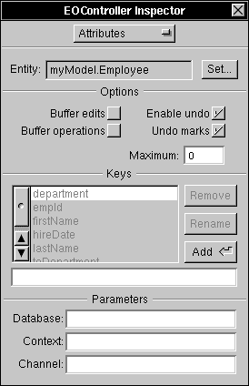 |
| Figure 43. Inspecting an Entity Controller
Entity The Entity field displays the name of the entity associated with the entity controller. The format of the name in this field is modelFile.entityName. For example, the Entity field in Figure 43 contains the name myModel.Employee, which indicates that the entity is named Employee, from the model file myModel. You can't edit this field.
Set The Set button lets you specify a different entity for the entity controller. When you click Set, Interface Builder displays the Set Entity panel, where you can select a new entity. If you try to specify a new entity for an entity controller that has connections, Interface Builder displays a warning and allows you to cancel the operation.
Options The Options area supplies additional information for how the data flow is orchestrated between the user interface and enterprise objects: |
| The "Enable undo" checkbox causes the controller to maintain an undo stack. When undo is enabled, the result of performing an undo operation depends on whether you have undo marks set (see below). If you don't have undo marks set, an undo operation undoes all of the changes currently on the undo stack. Note that performing a fetch operation clears the undo stack. | ||
| The "Undo marks" checkbox allows you to refine the behavior of undo. Enabling undo marks causes undo to be performed at a finer granularity: per operation. By default, an operation is delineated by whatever you do to a field before you finish editing its contents, typically by pressing Tab or Return. However, you can programmatically define undo marks to reflect a coarser level of edits. | ||
| When you have undo marks set, an undo operation reverses all of the changes back to the last defined mark. Subsequent undo operations reverse changes by mark until the stack is empty. | ||
| The "Buffer edits" checkbox causes edits to enterprise objects performed in the user interface to be buffered, instead of instantly applied. When you buffer edits, they aren't applied to your enterprise objects until you send the controller a saveToObjects message. | ||
| The "Buffer operations" checkbox causes changes made to the enterprise objects held by the controller to be buffered, instead of instantly flushed to the data source. When you buffer data source operations, they aren't applied to your data source until you send the controller a saveToDataSource message. | ||
| The Maximum field works in conjunction with the Undo marks checkbox. Maximum lets you set the maximum number of undo marks that will be recorded. Marks added after the maximum is reached cause earlier marks to be discarded. This method is useful for restricting memory usage. Setting the maximum to zero (the default) allows an unlimited undo stack. |
| Keys
The Keys area lists the keys for the enterprise object class associated with the entity; keys correspond to the properties you specified for the class in EOModeler. For more information on class keys, see "Controllers, Associations, and Class Keys." The Keys area provides buttons for adding, renaming, and deleting keys. You can't rename the keys that an entity controller derived from a model; you can only delete them. You can use the Add and Rename buttons to add the keys to a non-entity controller for which you have programmatically supplied a data source, or you can add a key that doesn't correspond to a class property to an entity controller. To add a new key, type the name in the text field below the list of keys.
Parameters The Parameters area is used when you want to specify a rendezvous point for multiple entity controllers, which could potentially be in separate nib files. By default, an application uses one EODatabase, one EODatabaseContext, and one EODatabaseChannel. If you have multiple entity controllers and don't specify a rendezvous point in the Parameters area, the entity controllers will still rendezvous on the "empty" (null) names in the Database, Context, and Channel text fields. However, if you want a finer level of control (for example, to use one context but multiple channels), then you should edit the fields accordingly. To specify a rendezvous point for multiple entity controllers, supply the same name in each of the fields that represent the level at which you want the entity controllers to rendezvous. For example, if you want two entity controllers to rendezvous at the Database and Context levels but to have different channels, you can type theDatabase in the Database field for both entity controllers, theContext in the Context field for both entity controllers, and Channel1 and Channel2 in the Channel fields for each of the entity controllers, respectively. These names are simply used as unique identifiers; they have no other meaning in the Framework. For more information, see the EODatabaseDataSource specification in the Enterprise Objects Framework Reference.
Dragging an Entity into the nib File Window Instead of dragging a model file into Interface Builder, you can drag in a single entity from EOModeler. This is the same as dragging in a model file, but with the entity pre-selected. In other words, it eliminates the step of having to select an entity in the Set Entity panel. You can still change the entity associated with the controller from the EOController Inspector. To drag an entity from EOModeler into Interface Builder: |
| 1. | From the Model Editor in EOModeler, drag an entity into the Interface Builder nib file window, as shown in Figure 44. |
| 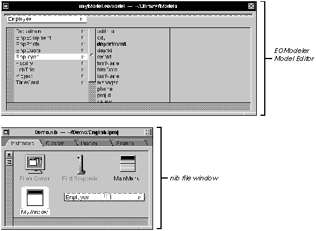 |
| Figure 44. Dragging an Entity from EOModeler into the nib File Window
An entity controller named after the entity appears in the nib file window. |
| Forming Associations Between an Entity Controller and an NXTableView |
| Forming an association from an entity controller to columns in an NXTableView enables those columns to display data for the keys of an enterprise object managed by the controller.
To form an association: |
| 1. | Display the EOController Inspector for the entity controller and choose Connections from the pop-up list. | |
| 2. | Choose Associations from the pop-up list at the top of the left column. | |
| As you can see in Figure 45, the Inspector lists the keys you just examined in the EOController Inspector. When you form an association between the entity controller and a user interface object, you're associating the value of a particular key of an enterprise object class managed by the controller with that user interface object. For more information on class keys, see "Controllers, Associations, and Class Keys." |
| 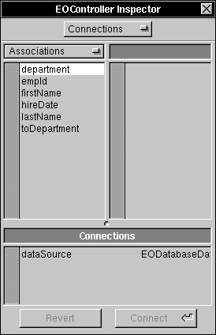 |
| Figure 45. Displaying Keys in the EOController Inspector |
| 3. | Control-drag from the entity controller in the nib file window to the first column in the NXTableView. | |
| 4. | In the Inspector, select the key whose value you want to display in the first column and click Connect (alternatively, you can double-click the key to make the connection). | |
| For example, using the key lastName in an association to a column causes that column to display the value associated with lastName. | ||
| 5. | Control-drag to connect the remaining keys to columns in the NXTableView. |
| You don't need to make associations for every key in your entity controller; there are no restrictions on what you choose to display in the user interface or the order in which you display it. In addition, a single key may participate in multiple associations. |
| Figure 46. Connecting Associations
Note that when you make an association between the entity controller and a column in the NXTableView, a number appears next to the key used by the association. This indicates the number of associations in which the key participates. As Figure 47 shows, the lastName, firstName, and department keys participate in one association each. |
 |
| Figure 47. Viewing Connected Associations |
| Fetching Data |
| Once you've formed associations between an entity controller and user interface objects using the methods described in the previous sections, you can add a control object, such as a button, to fetch data.
In Figure 48, a button titled "Fetch" has been added to the window. You connect the button to the entity controller through the usual methodology for connecting a control: Control-drag from the control object to the entity controller, select the fetch: action method in the Inspector, and click Connect. |
| 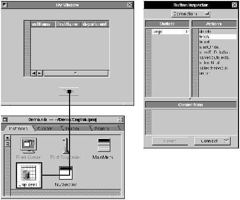 |
| Figure 48. Adding a Fetch Button to the Interface |
| Testing the Interface |
| To test your interface, choose Test Interface from the Document menu. Interface Builder enters test mode, enabling you to fetch the data and display it in the NXTableView. Figure 49 shows the interface in test mode. |
| 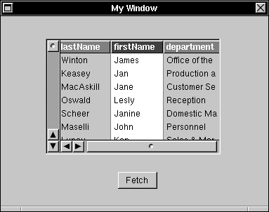 |
| Figure 49. Testing the Interface |
| Creating a Master-Detail Interface |
| A master-detail presentation is a way of displaying a to-many or a to-one relationship. In this configuration, the master table holds records for the source of the relationship; the detail table contains records for the destination. As individual records in the master table are selected, the contents of the detail table change to show the records that correspond to the selection in the master.
To create a master-detail interface: |
| 1. | In EOModeler, create a model that includes the relationship you want to display in a master-detail interface. | |
| For example, in a model based on the People database, you can add a to-many relationship from Department to Employee; one department has many employees. For more information on adding relationships to a model, see Chapter 5, "Using EOModeler." | ||
| 2. | Drag the model file containing the relationship into the Interface Builder nib file window and select the entity you want to use for your master. | |
| In this example, Department is specified as the master controller. | ||
| 3. | From the EOPalette, drag an EOController object into the nib file window. | |
| 4. | Control-drag from the Department entity controller to the detail EOController, and in the Inspector choose the relationship (in this example, toEmployee) you want to represent in the master-detail interface. |
| 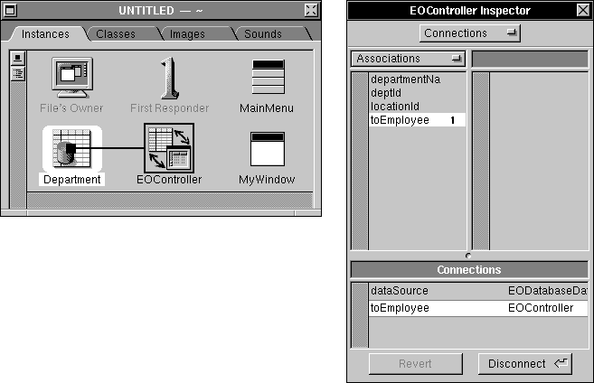 |
| Figure 50. Making a Master-Detail Association |
| 5. | Drag two NXTableViews into a window; department information will be displayed in one table (the master), while employee information will be displayed in the other (the detail). | |
| 6. | Control-drag to make associations from the Department entity controller to columns in the master table. | |
| 7. | Control-drag to make associations from the EOController object to columns in the detail table. |
| The keys available for the detail EOController object correspond to the properties of the Employee entity that's the destination of the toEmployee relationship.
Figure 51 shows the resulting master-detail interface. Note that when you select a department in the left (master) table, the display in the right (detail) table changes to display all of the employees that work in that department. |
| 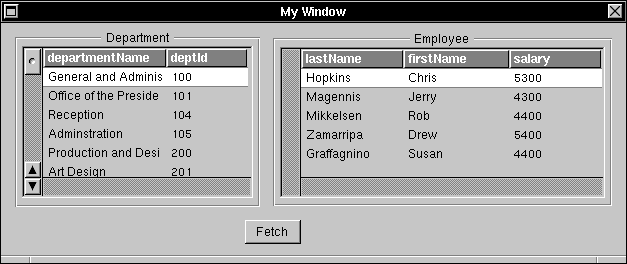 |
| Figure 51. Master-Detail in Action
Creating a Master-Peer Interface You can also create a master-peer interface. In a master-peer configuration, instead of using an entity controller and a plain EOController object as you do in a master-detail interface, you drag two entities or models into Interface Builder. Each of the resulting entity controllers has its own data source. You then connect the two entity controllers in the same manner that you connect an entity controller and a plain EOController in a master-detail interface. Because the peer controller has its own data source, it does its own fetching and inserting. This means that you can put more restrictive qualifiers on its data source than its relationship to the master controller specifies. For example, instead of displaying all employees that work in a certain department, you can use a master-peer configuration to display employees in the selected department who earn more than $5000 a month, sorted by last name. To qualify the peer data source, you use the EODatabaseDataSource setAuxiliaryQualifier: method. For more information, see the EODatabaseDataSource specification in the Enterprise Objects Framework Reference. If you use a master-peer configuration, you should note that insertions and deletions in the peer controller aren't reflected in the master object. For example, if the master-peer configuration is based on a to-many relationship that's a class property (and therefore an NSArray) in the master object, insertions and deletions of records in the peer will update the database, but not the array in the master object. For more information on master-peer configurations, see the EOQualifiableDataSources protocol specification in the Enterprise Objects Framework Reference, and Chapter 8, "Retrieving Records" in this book. |
| Using an NXImageView |
| Connecting a key to an NXImageView object is much like the process described above: You Control-drag an association between your controller and an object in your interface. However, the only keys that an NXImageView accepts are those that represent NXImage objects. |
| Figure 52. An NXImageView |
| Using the Standard Interface Objects |
| In addition to the objects defined in its palette, the Enterprise Objects Framework knows how to display data in most of the standard interface objects, such as a TextField.
Incorporating a Standard Object To incorporate a standard object: |
| 1. | Drag the desired object, such as a TextField, into a window. | |
| 2. | Make an association to it for the key whose value you want it to display. |
| 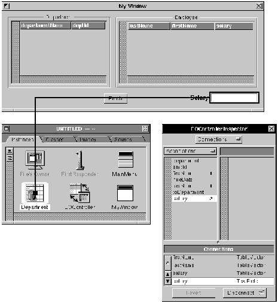 |
| Figure 53. Making an Association to a TextField
In Figure 53, note that the key "salary" is involved in two associations; when you perform a fetch operation, the salary is displayed in both the table column and the TextField. You can connect associations to the following user interface objects: |
| PopUpList | ||
| Form | ||
| TextField | ||
| Text | ||
| Matrix (in some configurations) |